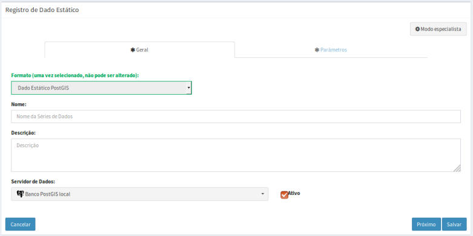
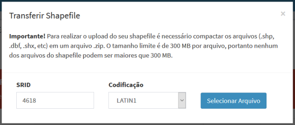
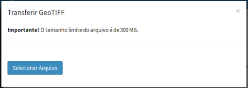

Adicionar Dado Estático
Para adicionar um novo dado estático é necessário ter um projeto ativo. No menu de opções selecione “ Dados Estáticos” para que a lista de dados disponíveis seja apresentada na área de trabalho. Clique no botão “ + ” para adicionar novo dado. Utilize o botão “Salvar” para salvar o dado estático. Não é permitido nomes de dados em duplicidade. Botão “Cancelar” volta à tela anterior sem salvar o dado. A Figura 2.24 mostra a área de trabalho para adicionar novo dado estático. Detalhes de cada campo a seguir.

Figura 2.24 – Módulo de Administração: Adição de dado estático
Registro de Dado Estático - Geral:
- Formato: Escolha o tipo entre Tabelas com Feições (PostgreSQL/PostGIS), Arquivos Matriciais (GeoTIFF) ou Arquivos Vetoriais (ESRI Shapefile). Dependendo do tipo escolhido alguns parâmetros específicos serão apresentados para preenchimento. IMPORTANTE: Uma vez escolhido não pode ser alterado, a menos que saia da edição e retorne.
- Nome: Defina o nome do dado estático (campo obrigatório para passar para os demais itens). O tamanho máximo do nome é de 100 caracteres. Não é permitido nomes duplicados.
- Descrição: Campo não obrigatório para descrição do dado estático. O tamanho máximo da senha é de 250 caracteres.
- Servidor de Dados: Escolha o servidor de onde está armazenado o dado. Se o dado estático estiver em formato de arquivo selecione um servidor do tipo ARQUIVO. Se o dado estático estiver em formato de tabelas de bancos de dados selecione um servidor do tipo PostGIS.
- Ativo: Botão ativo permite utilizar o dado estático. Botão desmarcado dado não poderá ser utilizado.
Registro de Dado Estático - Parâmetros:
- Nome do Arquivo (se formato “Arquivos Matriciais (GeoTIFF)” ou “Arquivos Vetoriais (ESRI Shapefile)”): Nome do arquivo estático. Se o arquivo estiver em sub-diretórios definido a partir do caminho informado na definição do servidor, acrescente estes subdiretórios na frente do nome do arquivo (por exemplo: maps/geo/vunerabilidade_geo.tif ou maps/shape/rodovias.shp ).
- Nome da Tabela (somente para Formato “Tabelas com Feições (PostgreSQL/PostGIS)”): Nome da tabela do servidor de banco de dados PostgreSQL + PostGIS. Ao clicar sobre o campo em branco a lista de tabelas será apresentada, ou ao digitar as primeiras letras serão apresentadas as tabelas com letras digitadas.
Caso o dado ainda não esteja disponível no servidor de arquivo ou no banco PostGIS escolhido na aba “Geral”, poderá efetuar a transferência (ou “upload”) a partir de qualquer computador onde o dado de origem se encontra. Utilize uma das opções a seguir dependendo do tipo de servidor escolhido.
- Transferir Shapefile (se formato Arquivos Vetoriais (ESRI Shapefile) ou “Tabelas com Feições (PostgreSQL/PostGIS)”): Utilize este botão para efetuar a transferência de arquivos Shape-File (mapas vetoriais) para servidores de banco de dados do tipo PostgreSQL/PostGIS definidos no projeto do usuário ou para servidores do tipo arquivo. Este botão dará acesso a janela da Figura 2.25 para proceder com a carga do arquivo.

Figura 2.25 – Módulo de Administração: Transferência de arquivo Shapefile para servidor.
- SRID: Digite o valor numérico dos parâmetros de projeção e datum correspondente ao arquivo Shapefile. Veja os principais valores utilizados no anexo A1.
- Codificação: Escolha a codificação de caracteres LATIN1 ou UTF8 do arquivo Shapefile correspondente.
- Selecionar Arquivo: Utilize este botão para selecionar o arquivo Shapefile a ser transferido para o banco de dados ou servidor de arquivos. Aguarde pela mensagem “Shapefile importado com sucesso!”.
- Transferir GeoTIFF (somente para formato “Arquivos Matriciais (GeoTIFF)”): Utilize este botão para efetuar a transferência de arquivos geotiff para servidores do tipo arquivo. Este botão dará acesso a janela da Figura 2.26 para proceder com a carga do arquivo.

Figura 2.26 – Módulo de Administração: Transferência de arquivo geotiff para servidor.
- Selecionar Arquivo: Utilize este botão para selecionar o arquivo Geotiff a ser transferido para o servidor de arquivos. Aguarde pela mensagem “Geotiff importado com sucesso!”.